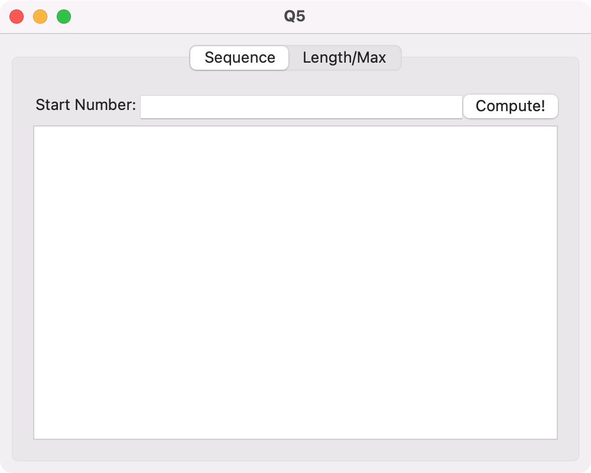
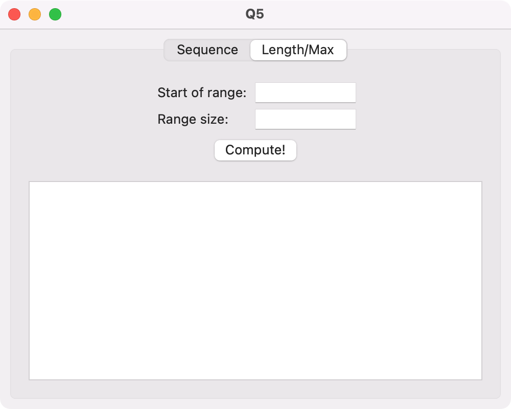

課題の進め方
基本的には適当なプロジェクト/ソリューションを作って課題を進めた上で，MainForm.csを提出する．
採点はコマンドラインからdotnet new etoappを実行した上でMainForm.csを提出されたもので上書きすることにより行う．
採点者は基本的に採点者自身の環境で動作確認を行うことに注意する．
第6回課題においてMainForm.cs以外に提出に含めたいものがある場合（たとえば画像ファイル等）は事前にメール（メールアドレスはClassroom内「受講者用案内」を参照）で相談のこと．
他の人（受講者・非受講者両方）に解答内容（一部でも）を見せない，そして他の人の解答内容（一部でも）を見ないようお願いします．特に， 公開の場所に解答を置かないようお願いします．githubやbitbucket等は使える人は使えばよいと思いますが，privateレポジトリにするようにお願いします．
プロジェクト/ソリューションの作成
Note
再掲：プロジェクトは一つの実行形式やライブラリを作成するためのコード等を全てまとめたものであり，ソリューションは関連するプロジェクトをまとめたもの（参考：What are solutions and projects in Visual Studio?）．
指定された名前（課題5ではQ5，課題6ではQ6とする）の空のフォルダを適当な場所に新規作成し，
VSCodeで作成したフォルダを開く．そして，VSCode内のターミナルで以下を実行する．
dotnet new etoapp -sln課題の実施
MainForm.cs を問題文の指示の通りに編集する（提出・採点手続きの簡略化のため提出する.csファイルは一つのみ）．作成した.csファイルには先頭部分に学籍番号と名前をコメントとして含めること．また，自身のプログラムの動作確認を行ったプラットフォームの情報（Mac, Gtk, Wpfの別．複数可．わからないならOS名）も含めるものとする．こちらの情報はあくまで念のためであり，基本的には採点者は自身の環境で動作確認を行う．なので，たとえば学籍番号Z0TB9999の東北 大学さんの提出ファイルは，もし当人が動作確認を.Macを用いて行ったのであれば
// Z0TB9999
// 東北 大学
// 動作確認：Mac という行から始まる．
また，.csprojに変更を加えた場合は，その旨と具体的な変更内容を上記の後にコメントとして含めるものとする．たとえば，Q5.csprojというプロジェクトファイルにおいてPropertyGroup以下にあるTargetFrameworkをnet8.0に変更したのであれば，以下のような行を含める．
// Q5.csproj の /Project/PropertyGroup/Target の内容を net8.0 に変更した提出
できあがった MainForm.csをClassroom内の当該回の「課題」より提出する．また問題文に指示がある場合はそのファイル（例：課題6で提出物に含めたいリソースがある場合）も提出する．提出前には以下を確認しよう．
-
- ただし，友人の解答を見ない（一部でも），そして友人に解答を見せない（一部でも）ようお願いします
基本課題
コラッツ予想は，正整数 n が与えられたときに，
- n が奇数なら 3n + 1 とする
- n が偶数なら2で割る
ことを繰り返すと必ず最終的に1に至るというものである．たとえば，77から始めると現れる数は77, 232, 116, 58, 29, 88, 44, 22, 11, 34, 17, 52, 26, 13, 40, 20, 10, 5, 16, 8, 4, 2, 1のとなる．こうした数列のことを本課題では便宜上コラッツ列と呼ぶことにする．
本課題の目標はコラッツ列の計算・表示を行ってくれるアプリケーションを作成することである．
その1
ラベルを
Labelボタン（そのボタンテキストがButton）を
(Button)テキストボックスを
[ ]テキストエリアを
+-------------+
| |
| |
+-------------+というアスキーアートとして図示することにする．
このとき，Eto.Formsを用いて以下のようにコントロールが配置されているウィンドウを作成しなさい． ただし，テンプレートから生成されたコードのうち，MainForm.cs のみ変更すること．
Start Number: [ ] (Compute!)
+-------------------------------------+
| |
| |
| |
| |
| |
+-------------------------------------+ただし，以下を満たすこと．
- "Start Number:"の部分は
Labelを用いて実現 - 上部のテキストボックスは
TextBoxを用いて実現NumericMaskedTextBox<T>を利用してもよい（この場合も0が入力できてしまうし，BigIntegerには対応していない）が，しなくてもよい
- "(Compute!)"の部分は
Buttonを用いて実現(や)の部分はボタンのラベルに含めない
- 中央のテキストエリアは
TextAreaを用いて実現- 表示用で入力用でないので
ReadOnlyプロパティをtrueに設定したほうがよいが，しなくてもよい
- 表示用で入力用でないので
- ウィンドウのサイズは十分に大きい（たとえば500x400程）
- テキストボックスにはプレースホルダーテキストを設定してもよいし，しなくてもよい
PlaceholderTextプロパティ（string型）を用いると設定できる．
- ウィンドウサイズの変更に伴い，テキストボックスの幅，テキストエリアの高さと幅が伸縮するように
その2
上記のアプリケーションに以下の機能を実装せよ．
- "Compute!"ボタンが押された（クリックされた）ら以下の処理を行う
- もし，テキストボックスに入力されたの正整数nを表す文字列であったなら
- テキストエリアの中身がnから始まるコラッツ列になるようにする．数の間は改行で区切るものとする．最後の改行の有無は問わない．
- 簡単のためテキストボックスに正整数以外が入力されることは考えないことにする
- そうでない場合の処理は本課題では評価の対象にしない．本来は例外処理するか，あるいはそもそもそういう文字列は入力できないようにするのが望ましい．
- もし，テキストボックスに入力されたの正整数nを表す文字列であったなら
たとえば，テキストボックスに"8"を入力して"Compute!"ボタンを押すと以下のようになる．
Start Number: [ 8 ] (Compute!)
+-------------------------------------+
| 8 |
| 4 |
| 2 |
| 1 |
| |
+-------------------------------------+intやuintを使うと，比較的小さい数についても計算途中でオーバフローする（intだと113383，uintだと159487で起こるはず）が，それは今回の主旨ではないので本課題では問わないことにする．気になるようであればlongやulongを使うともっと先まで計算できる．longだと8528817511まで，ulongだと12327829503まで計算できるはず（参考：3x + 1 Path Records）．それ以上先を計算したければBigIntegerを使用する．
Tip
テキストボックスに入力されたテキストを取得するにはTextプロパティを用いる．テキストエリアにテキストを設定するには，当該オブジェクトのTextを用いる．
発展課題
Important
本課題を完了できたのならば本課題の解答のみを提出すればよく，基本課題の解答は提出する必要はない．
今度はコラッツ列そのものではなく，その長さと列の途中でどのぐらい大きな数になるのかに興味があるとする．つまり，「初期値」，「その初期値から始まるコラッツ列の長さ」，「その列に出現する数の最大値」に興味がある．最初の10個の正整数についてはこれらは以下のようになる．
| 初期値 | 列の長さ | 列中に出現する数の最大値 |
|---|---|---|
| 1 | 1 | 1 |
| 2 | 2 | 2 |
| 3 | 8 | 16 |
| 4 | 3 | 4 |
| 5 | 6 | 16 |
| 6 | 9 | 16 |
| 7 | 17 | 52 |
| 8 | 4 | 8 |
| 9 | 20 | 52 |
| 10 | 7 | 16 |
本課題では便宜上この，「初期値」，「その初期値から始まるコラッツ列の長さ」，「その列に出現する数の最大値」の3つ組を，kが初期値であるときにC(k)と書くことにする．たとえば，C(3) = (3, 8, 16)である．k = 1から順にC(k)を計算していくと興味のある数にたどりつくまでに時間がかかるので，数の範囲を定めて，その範囲に含まれるそれぞれの数kについてC(k)を求めることを考える．
発展課題の目的は上記の計算を行うアプリケーションを作成することである．ただし，基本課題で作成したウィンドウの中身（画面領域，ペイン等と呼ぶ）と，発展課題で作成するC(k)の計算のための画面領域はタブを使って切り替えられるようにする．
Tip
タブを実現するためにはTabControlを利用する．このコンテナはたとえば以下のように利用する．
// 基本課題で作成した画面領域をpane1とする．
// 要は基本課題で Content = ... とした ... の部分である．
// また，発展課題で作成する画面領域をpane2とする．
var tabs = new TabControl {
Pages = {
new TabPage { Content = pane1, Text = "Sequence" }, // Contentはタブの中身，Textはタブのラベル
new TabPage { Content = pane2, Text = "Length/Max" } // 同上
}
};フォームの中身をTabControlにする場合は少しパディングを設定したほうが見栄えがよいかもしれない（採点対象外）．
C(k)の計算を行う画面領域のコントロールの配置は以下のようにせよ．
Start of range: [ ]
Range size: [ ]
(Compute!)
+------------------------------------+
| |
| |
| |
| |
| |
| |
+------------------------------------+- 2つのテキストボックスは左端および右端が揃うようにする．
- 2つのラベル（
Start of range:とRange size:）は左端が揃うようにする - 上記の入力部分および"Compute!"ボタンは水平方向には画面領域の中央になるようにする
- ボタンの上下のスペースについては問わない（評価対象にしない）
- テキストエリアは画面領域が伸縮するのに合わせて縦にも横にも伸縮するするようにする
- "Compute!"ボタンが押された（クリックされた）ら以下の処理を行う
- 上のテキストボックスに正整数nを表す文字列が入力され，下のテキストボックスに正整数mを表す文字列が入力されたら
テキストエリアの中身を，k = nからk = n + m − 1まで順に各行にC(k)を並べたものに変更する．ただし，C(k)の3つの数はスペースで区切るものとする．たとえば，n = 20でm = 10のときはテキストエリアの中身は以下となる．
20 8 20 21 8 64 22 16 52 23 16 160 24 11 24 25 24 88 26 11 40 27 112 9232 28 19 52 29 19 88
- 基本課題と同様に「上のテキストボックスに正整数nを表す文字列が入力され，下のテキストボックスに正整数mを表す文字列が入力され」なかった場合の挙動は規定しない．
- 上のテキストボックスに正整数nを表す文字列が入力され，下のテキストボックスに正整数mを表す文字列が入力されたら
ヒント：発展課題で作成するウィンドウはたとえばMacだと以下のような感じになる．
 
Important
「列の長さ」はそう大きくならない（8528817511に対しても1000以下）なので愚直に計算したので十分．より（時間的に）効率的に計算するには，kからC(k)を計算する関数をメモ化（最初の計算で入力と出力の対応を憶えておき，二回目以降の計算では実際には計算せずに憶えたおいた出力を返すようにすること）する．
動作確認用
C(1)からC(100)までは以下．
1 1 1
2 2 2
3 8 16
4 3 4
5 6 16
6 9 16
7 17 52
8 4 8
9 20 52
10 7 16
11 15 52
12 10 16
13 10 40
14 18 52
15 18 160
16 5 16
17 13 52
18 21 52
19 21 88
20 8 20
21 8 64
22 16 52
23 16 160
24 11 24
25 24 88
26 11 40
27 112 9232
28 19 52
29 19 88
30 19 160
31 107 9232
32 6 32
33 27 100
34 14 52
35 14 160
36 22 52
37 22 112
38 22 88
39 35 304
40 9 40
41 110 9232
42 9 64
43 30 196
44 17 52
45 17 136
46 17 160
47 105 9232
48 12 48
49 25 148
50 25 88
51 25 232
52 12 52
53 12 160
54 113 9232
55 113 9232
56 20 56
57 33 196
58 20 88
59 33 304
60 20 160
61 20 184
62 108 9232
63 108 9232
64 7 64
65 28 196
66 28 100
67 28 304
68 15 68
69 15 208
70 15 160
71 103 9232
72 23 72
73 116 9232
74 23 112
75 15 340
76 23 88
77 23 232
78 36 304
79 36 808
80 10 80
81 23 244
82 111 9232
83 111 9232
84 10 84
85 10 256
86 31 196
87 31 592
88 18 88
89 31 304
90 18 136
91 93 9232
92 18 160
93 18 280
94 106 9232
95 106 9232
96 13 96
97 119 9232
98 26 148
99 26 448
100 26 100